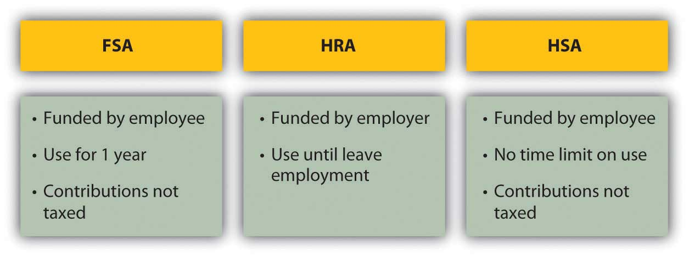

Melissa is a medical transcriptionist who runs a cleaning service on the side. She usually clears about $24,000 per year from the cleaning service and has come to rely on that money. One day, Melissa slips on a wet floor. She is taken by ambulance to the local hospital, where she is treated for a badly broken wrist and released the next day. Melissa can’t clean for about eight weeks, losing close to $6,000 in earnings.
Soon, medical bills start to arrive. Melissa is not concerned, because she has health insurance through her job as a medical transcriptionist. She is surprised to find out, however, that some of the costs of this accident are not covered, that she has a significant deductible, and that she’ll also have to pay the difference between what the doctors billed and what the insurance will pay. Not only did she lose substantial cleaning earnings, but her out-of-pocket costs are mounting as well. This accident is beginning to be very costly.
Melissa is discovering that health insurance is a complicated business. The time to understand your health coverage is before you need it. When you are recovering from an accident or illness, you should not be concerned with your medical bills, yet you may have to be.
According to the National Coalition on Health Care (http://www.nchc.org), “Since 1999, employment-based health insurance premiums have increased 120 percent, compared to cumulative inflation of 44 percent and cumulative wage growth of 29 percent during the same period.”The Henry J. Kaiser Family Foundation, “Employee Health Benefits: 2008 Annual Survey,” September 2008. Even where employers “provide” health insurance as an employee benefit, in other words, workers are paying an increasing share of the premium. In 2008, that share averaged 27 percent.National Coalition on Health Care, “Health Insurance Costs,” 2009, http://www.nchc.org (accessed May 3, 2009). A 2005 “study found that 50 percent of all bankruptcy filings were partly the result of medical expenses. Every 30 seconds in the United States someone files for bankruptcy in the aftermath of a serious health problem.”David U. Himmelstein, Deborah Thorne, Elizabeth Warren, and Steffie Woolhandler, “Medical Bankruptcy in the United States, 2007: Results of a National Study,” American Journal of Medicine 122, no. 8 (August 2009): 741–46.
Even if you think those numbers are exaggerated, it’s still sobering, because no matter how much you try to take care of yourself and to be careful, no one can evade the pure risk of injury or illness. All you can do is try to shift that risk in a way that makes sense for your financial health.
Because of the increasing costs of health care and the increasing complexities of paying for them, the distribution and financing of health care is much discussed and debated in the United States, especially the roles of the federal government and insurance providers. Regardless of the outcome of this debate, momentum is building for change. You should be aware of changes as they occur so that you can incorporate those changes into your budget and financial plans.
There are many different kinds of coverage and plans for health insurance. You may have group health insurance offered as an employee benefit or as a member of a professional association. Group plans have lower costs, because the group has some bargaining power with the insurer and can generally secure lower rates for its members. But group plans are not necessarily comprehensive, so you may want to supplement the group coverage with an individual health insurance policy, available to individuals and families.
Sufficient coverage should include basic insuranceHealth insurance that covers the costs of physician expenses, surgical expenses, and hospital expenses. and major medical insurance. A basic insurance policy will cover physician expense, surgical expense, and hospital expense.
Frequently, these coverages are capped or limited. For example, hospital expense coverage is typically limited to a certain amount per day or a certain number of days per incident. Surgeon’s fees are often capped.
The three basic coverages are usually combined under one policy. In addition, health insurance is completed by major medical insuranceInsurance for the costs of serious injury or illness., which covers the costs of a serious injury or illness. Depending on the extent and the nature of your illness or injury, medical bills can quickly exceed your basic coverage limits, so major medical can act as an extension to those limits, saving you from potential financial distress.
Dental insurance also supplements your basic insurance, usually providing reimbursement for preventative treatments and some partial payment of dental services such as fillings, root canals, crowns, extractions, bridgework, and dentures. Vision insurance provides for eye care, including exams and treatment for eye diseases, as well as for corrective lenses. Depending on your basic coverage limits, dental and vision care could be important for you.
Another feature of basic coverage is a prescription drug plan. Prescriptions may be covered entirely or with a co-pay, or only if the generic version of the drug is available. Your insurer should provide a formularyA list of drugs covered by an insurer under a prescription drug plan. or a list of drugs that are covered. Depending on your plan, prescription coverage may be available only as a supplement to your basic coverage.
As health care costs and insurance premiums rise, insurers add cost offsets to make their policies more affordable. Those offsets may include the following:
Each of these payment features represents responsibilities of the insured, that is, your out-of-pocket costs. The more costs you shoulder, the less risk to the insurer, and so the less you pay for the insurance policy. Making you responsible for initial costs also discourages you from seeking health care more than is necessary or from submitting frivolous health care claims.
Costs vary with coverage, coverage limits, and offsets, and they vary widely between insurers. You should be well informed as to the specifics of your coverage, and you should compare rates before you buy. An insurance broker can help you to do this, and there are Web sites designed to help you explore the available options. See, for example, the health insurance consumer guide and resource links from the U.S. Department of Health and Human Services at http://www.ahrq.gov/consumer/insuranceqa/.
Health insurance is sold through private insurers, nonprofit service plans, and managed care organizations. Private insurers sell most of their plans to employers as group plans. Individuals are far more likely to purchase insurance through a service plan or managed care.
Private (for-profit) plans in most states are underwritten based on your age, weight, smoking status, and health history and are generally more expensive than other types of plans. You may have to take a medical exam, and specific preexisting conditions—such as asthma, heart disease, anxiety, or diabetes—could be excluded from coverage or used as grounds for increasing the cost of your premium, based on your higher risk. Nevertheless, federal and state laws protect you from being denied health care coverage because of any preexisting condition.
A service plan such as Blue Cross/Blue Shield, for example, consists of regional and state-based nonprofit agencies that sell both group and individual policies. More than half of the health insurance companies in the United States are nonprofits, including, for example, Health Care Service Corporation and Harvard Pilgrim Health Care as among the largest (http://www.nonprofithealthcare.org/resources/BasicFactsAndFigures-NonprofitHealthPlans9.9.08.pdf).
Managed care organizationsOrganizations or networks of health care providers based on the principle of providing preventative care in order to better health and lower costs of health care. Such organizations also provide for emergency and special treatment services under various systems. became popular in the last thirty years or so with the idea that providing preventative care would lower health care costs. Managed care takes the following forms:
The two most familiar kinds of managed care are health maintenance organizations (HMOs) and preferred provider organizations (PPOs). A health maintenance organizationAn organization to provide “managed care” through reliance on primary care physicians and a network of specialists, with an emphasis on preventative care. directly hires physicians to provide preventative, basic, and supplemental care. Preventative care should include routine exams and screening tests and immunizations. Basic care should include inpatient and outpatient treatments, emergency care, maternity care, and mental health and substance abuse services. As with any plan, the details for what defines “basic care” will vary, and you should check the fine print to make sure that services are provided. For example, the plan may cover inpatient hospitalizations for a limited number of days in case of a physical illness, but inpatient hospitalization for a more limited number of days for a mental illness.
Supplemental care typically includes the cost of vision and hearing care, prescriptions, prosthetics devices, or home health care. Some or all of this coverage may be limited, or may be available for an added premium. The premium paid to the HMO is a fixed, monthly fee, and you must seek care only within the HMO’s network of care providers.
The most serious constraint of HMOs is the limited choice of doctors and the need to get a referral from your primary care physician (PCP) to obtain the services of any specialist. Depending on where you live and the availability of medical practitioners, this may or may not be an issue for you, but before joining an HMO, you should consider the accessibility and convenience of the care that you are allowed, as well as the limitations of the coverage. For example, if you are diagnosed with a serious disease or need a specific surgical technique, is there an appropriate specialist in the network that you can consult? Suppose you want a second opinion? The rules differ among HMOs, but these are the kinds of questions that you should be asking. You should also be familiar with the HMO’s appeal procedures for coverage denied.
The preferred provider organization (PPO)A type of managed care in which physicians, hospitals, and other care providers contract with an insurer to provide care at reduced rates upon referral from the insured’s primary care physician. Unlike the HMO, out-of-network providers may be used. has a different arrangement with affiliated physicians: it negotiates discounted rates directly with health care providers in exchange for making them the “preferred providers” for members seeking care. Care by physicians outside the network may be covered, but with more limitations, or higher co-pays and deductibles. In exchange for offering the flexibility of more choices of provider, the PPO charges a higher premium. Services covered are similar to those covered by an HMO.
The exclusive provider organization works much like the PPO, except that out-of-network services are not covered at all and become out-of-pocket expenses for the insured.
The point-of-service (POS)A type of managed care in which physicians, hospitals, and other care providers contract with an insurer to provide care at reduced rates upon referral from the insured’s primary care physician. Unlike the HMO, out-of-network providers may be used, but on a limited basis. plan also uses a network of contracted, preferred providers. As in an HMO, you choose a primary care physician who then controls referrals to specialists or care beyond preventative and basic care. As in the PPO, out-of-network services may be used, but their coverage is more limited, and you pay higher out-of-pocket expenses for co-pays and deductibles.
Figure 10.9 "Managed Care Choices" shows the differences in managed care options.
Figure 10.9 Managed Care Choices

In the United States, if someone is not self-insured or uninsured, health insurance coverage is paid for, at least in part, by the employer. As health care costs have risen, employers in all industries have increasingly complained that this cost makes them less competitive in global markets. As an incentive to have more people paying the costs of health care themselves and to be less dependent on employers, the federal government has created tax deductions for savings earmarked for use in paying for health costs. These savings plans are known as flexible spending accounts (FSAs), health reimbursement accounts (HRAs), and health savings accounts (HSAs).
A flexible savings accountAn account created with regular payroll deductions by an employee to finance supplemental health care costs. Monies must be expended within a specified time period or forfeited (“use it or lose it”). is used to supplement your basic coverage. It is offered by employers and funded by employees: you may have a tax-exempt deduction made from your paycheck to your flexible spending account. The money from your FSA may be used for care expenses not normally covered by your plan—for example, orthodonture, elder care, or child care. At the end of the year, any money remaining in your account is forfeited; that is, it does not roll over into the next year. Unless you can foresee expenses within the coming year, flexible spending may not be worth the tax break.
A health reimbursement accountAn employer owned and funded account to finance empoyee health care costs, with the employee choosing the type of coverage. is an account funded by employers. The amount is used to pay the premiums for basic coverage with a high deductible, and any money left over may be used for other health expenses, or, if unused, may be carried over to the next year. The account is yours until you leave your job, when it reverts back to your employer.
A health savings accountIndividually owned and financed savings accounts that may be used to finance health care costs with tax-deductible contributions. (HSA) allows a tax-deductible contribution from your paycheck to pay the premiums for catastrophic coverage with a high deductible and whatever out-of-pocket health care costs you may have. It is employee funded, employee managed, and employee owned. Thus, it is yours, and you may take it with you when you change jobs.
Figure 10.10 "Differences in Private Funding of Health Care" shows the differences between these accounts.
Figure 10.10 Differences in Private Funding of Health Care
A health savings account shifts the responsibility for health insurance from the employer to the employee, although it still gives the employee access to lower group rates on premiums. If you are relatively young and healthy, and your health care need is usually just an annual physical, this seems like an advantageous plan. However, remember that the idea of insurance is to shift risk away from you, to pay someone to assume the risk for you. With a high-deductible policy, you are still bearing a lot of risk. If that risk has the potential to cause a financial disaster, it’s too much.
If you have employer-sponsored health insurance and you leave your job, you may be entitled to keep your insurance for eighteen months (or more under certain circumstances). Under the 1985 Consolidated Budget Omnibus Reconciliation Act (COBRA), an employee at a company with at least twenty employees who notifies the employer of his or her intention to maintain health care coverage is entitled to do so provided the employee pays the premiums. Some states extend this privilege to companies with less than twenty employees, so you should check with your state’s insurance commissioner. You may also be able to convert your group coverage into an individual policy, although with more costly premiums.
The Health Insurance Portability and Accountability Act (HIPAA) of 1996 addresses issues of transferring coverage, especially as happens with a change of jobs. It credits an insured for previous periods of insurance coverage that can be used to offset any waiting periods for coverage of preexisting conditions. In other words, it makes it easier for someone who is changing jobs to maintain continuous coverage of chronic conditions or illnesses.Centers for Medicare and Medicaid Services, U.S. Department of Health and Human Services, http://www.cms.hhs.gov/hipaaGenInfo/ (accessed November 24, 2009). (For more information, research the U.S. Department of Health and Human Services at http://www.hhs.gov; see, for example, http://www.hhs.gov/ocr/privacy/hipaa/administrative/statute/hipaastatutepdf.pdf.)
The federal government, in concert with state governments, provides two major programs to the general public for funding health care: Medicare and Medicaid. The federal government also provides services to veterans of the armed forces, and their spouses and dependents, provided they use veterans’ health care facilities and providers (see http://www.va.gov).
MedicareA federal program financing health care costs with eligibility based on age (for those over age sixty-five). was established in 1965 to provide minimal health care coverage for the elderly, anyone over the age of sixty-five. Medicare offers hospital (Part A), medical (Part B), combined medical and hospital (Part C), and prescription coverage (Part D), as outlined in Figure 10.11 "Medicare Plans and Coverage".
Figure 10.11 Medicare Plans and Coverage

Medicare is really a combination of privately and publicly funded health care; the optional services all require some premium paid by the insured. You may not need Medicare’s supplemental plans if you have access to supplemental insurance provided by your former employer or by membership in a union or professional organization.
Medicare does not cover all services. For example, it does not cover dental and vision care, private nursing care, unapproved nursing home care, care in a foreign country, and optional or discretionary (unnecessary) care.
Medicare also determines the limits on payments for services, but physicians may charge more than that for their services (within limits determined by Medicare). You would be responsible for paying the difference. For these reasons, it is advisable to have supplemental insurance.
Marley thought she didn’t need to know anything about Medicare, being young, single, and healthy, but then her sixty-six-year-old father developed a debilitating illness, requiring not only medical care but also assistance with many of his daily living activities. Suddenly, Marley was shouldering the responsibility of arranging her father’s care and devising a strategy for financing it. She quickly learned about the care and limits of coverage offered by various Medicare plans.
MedicaidA federal program financing health care costs with eligibility based on income. was also established in 1965 to provide health care based on income eligibility. It is administered by each state following broad federal guidelines and is jointly financed by the state and federal government. This means that states differ somewhat in the benefits or coverage they offer. If someone is covered by both Medicaid and Medicare, Medicaid pays for expenses not covered by Medicare, such as co-pays and deductibles. Together, Medicare and Medicaid pay about 60 percent of all nursing home costs.The Henry J. Kaiser Family Foundation, “The Kaiser Commission on Medicaid and the Uninsured,” January 2006, http://www.kff.org/medicaid/upload/7452.pdf (accessed April 11, 2009).
Long-term care insuranceInsurance to provide for permanent assistance with activities of daily living in the event of disabling injury or illness. is designed to insure your care should you be chronically unable to care for yourself. “Care” refers not to medical care, but to care of “activities of daily living” (ADLs) such as bathing, dressing, toileting, eating, and mobility, which may be impaired due to physical or mental illness or injury.
Long-term care coverage is offered as either indemnity coverage or “expense-incurred” policies. With an indemnity policy, you will be paid a specified benefit amount per day regardless of your costs incurred. With an “expense-incurred” policy, you will be reimbursed for your actual expenses incurred. Both types of policies can have limits, either for dollar amounts per day, week, or month or for number of days or years of coverage. Newer policies are designed as integrated policies, offering pooled benefits and specifying a total dollar limit of benefits that may be used over an unspecified period.
Need for long-term care is anticipated in older age, although anyone of any age may need it. When you buy the policy, you may be far away from needing the coverage. For that reason, many policies offer benefit limits indexed to inflation, to account for cost increases that happen before you receive benefits.
The cost of a long-term care policy varies with your age, coverage, policy features such as inflation indexing, and current health. As with any insurance purchase, you should be as informed as possible, comparing coverage and costs before buying.
The insured’s responsibility for costs can be structured as
Health insurance is sold through private insurers, nonprofit service plans, and managed care organizations, which may be structured as
Private health care financing may be supplemented by